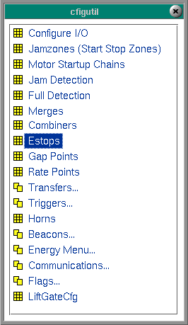

Configuration Utilities
| Configuration Utilities are available from the Utility Menu.
The Configuration Utilities Menu holds utilities which are configured specifically for each project.
The flexibility provided by table-driven software allows for
on-the-fly configuration, on-site fine tuning, as well as future expansion
and changes in system design.
As with other FortnaPlus© menus, editing requires pressing enter after typing an entry. Alt-home will take you to the first column and alt-end to the last. Page up and page down display a preceding or successive page of records. Some fields are of a pull down type, meaning that when the Enter key is pressed, a menu will be displayed from which to make your selection. Highlight your selection and press enter to cause your choice to fill in the field.
|
 |
Pressing F1 will bring up a help menu describing the keystrokes available for navigation and editing.
The Configure I/O table is used to link FortnaPlus© to the I/O racks in the electrical panel.
The Jamzones menu configures zones or areas of conveyor to operate together as a unit. These configured units of system will stop together when an e-stop is activated. These 'jamzones' will also stop as a unit when a jam is detected within this zone. When this zone is selected from the Start/Stop menu, it will start. The Motor Startup Chains control the motors for the system. The chains control the startup sequences, startup timing, and dependencies of motors on the system. The chains also control the drawing of the motors and their conveyors. Jam Detection menu uses the Jamcheck table to control detection of conveyor jams, to draw the jammed conveyor, and to display the error messages on the conveyor status screen. The Full Detection table controls the detection of, drawing for, and error messages for full conditions.
When two or more sections of conveyor merge into one, precise timing is required to cause smooth convergence and maintain desired spacing between product. Timers are an integral part of this operation.
This menu allows on-site configuration of combiners. There are two menus which work together to provide this capability:
CombLaneThe E-stops menu configures the errors that will be displayed when an e-stop is activated.
CombBoss
The menu Gap Cfg allows configuration of the minimum pitch (distance from nose to nose), and minimum gap (distance between product), at locations on the conveyor where it is necessary to establish a minimum gap. Timers are used to regulate these quantities. The timers are active while the belt is running. If either the gap or pitch is under the allowable amount, the product is held until the timers time out, creating sufficient gap. Used by Fortna personnel for advanced configuration. There are eight menus that work together to provide the flexibility enabling the setting up of or making changes to Transfers on-the-fly. We will provide a description of the logic used when a carton comes into a transfer and how these menus work together. The Horns menu allows for configuration of the warning horns or beacons. Here you can set up one or more horns and/or beacons to activate within a configurable time framework. Selecting Triggers brings up three menu options.
- Trigger Sets to create a trigger
- Combination Triggers to build a complex set of triggers.
- Refresh Triggers before using
The Beacons menus are provided for setting up beacons. Beacons can be set up to flash or not in any pattern using the following menus.
Selecting Beacons displays a menu of 5 options.
The Flags Menu presents three menu options.
- Beacon Table holds one record for each beacon.
- Beacon Patern Table sets pattern
- Beacon Trigger Table configures task of beacons
- Hide Internal Columns
- Show Internal Columns
- Integer Flags - FortnaPlus© uses the Integer Flags as permanent variables to store information and as signals between the various program processes.
- String Flags - FortnaPlus© uses the String Flags as permanent variables to store information and as signals between the various program processes. The string flags are custom for projects.
- New Flags - New Flags Menu contains integer flags.
The Energy Menu allows for zones to be put in sleep mode when they have not seen product for a user-configurable amount of time.
Selecting the Energy Menu will display several menu options.
The communications menu provides access to the tables that set up the information FortnaPlus© needs to communicate with other systems or hardware devices that send or accept data.
- Energy Zones Table configures zones
- Energy Trigger Table sets up the wake up triggers
- Wake All Zones at the push of a button
- Hide Internal Columns
- Show Internal Columns
Selecting the Communications Menu will display several menu options.
- Machine Menu
- Connection Types Menu
- Protocols
- Message Map
- Auto Send Messages
- KTX Utility
Copyright © 2001 Fortna Inc. All rights reserved.